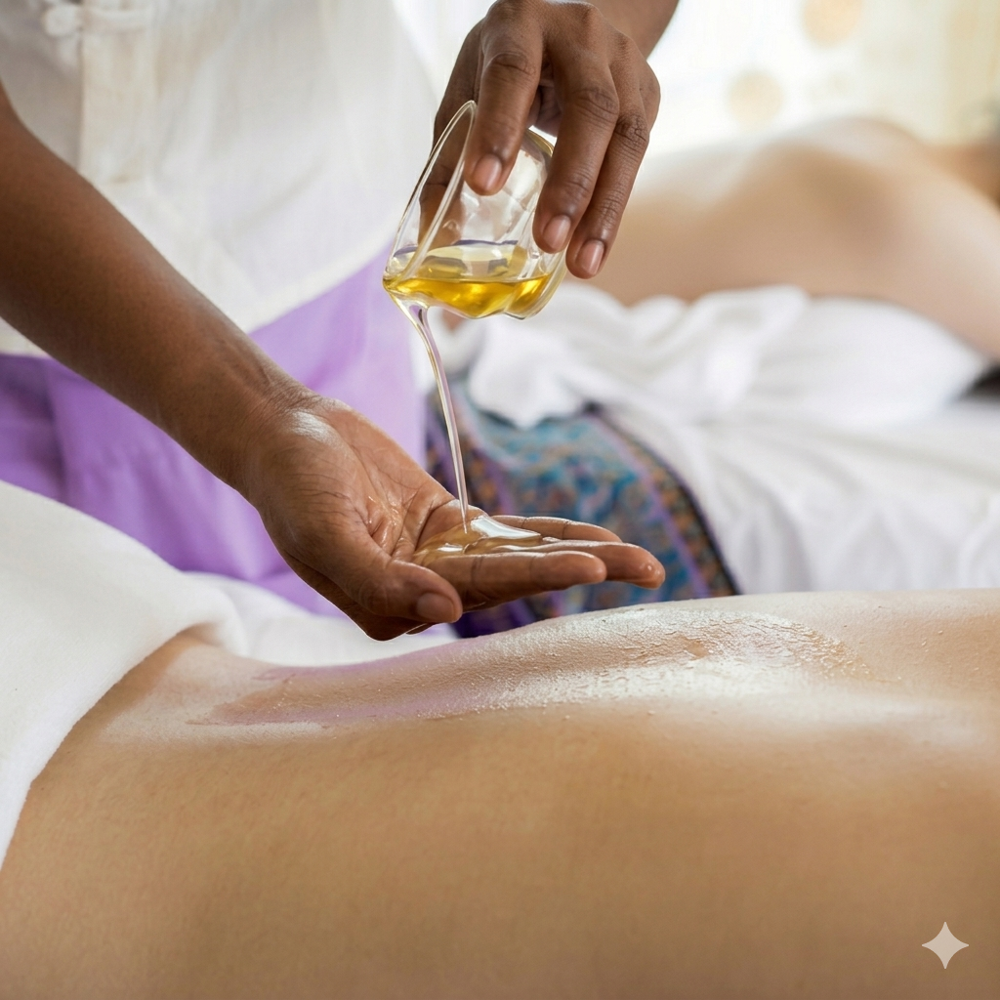
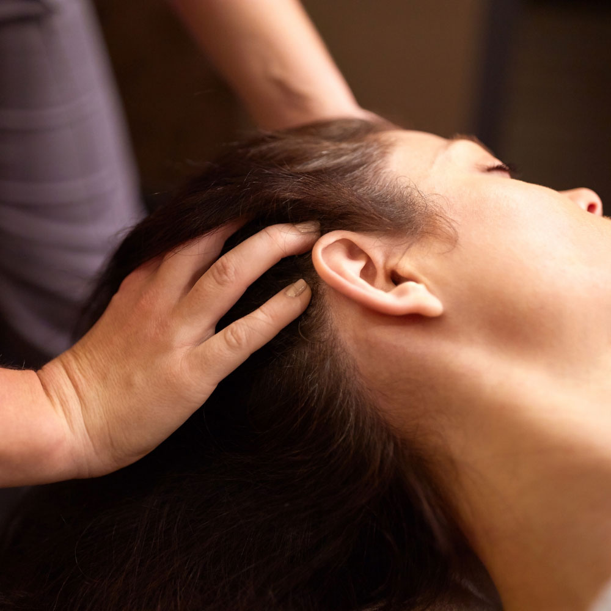
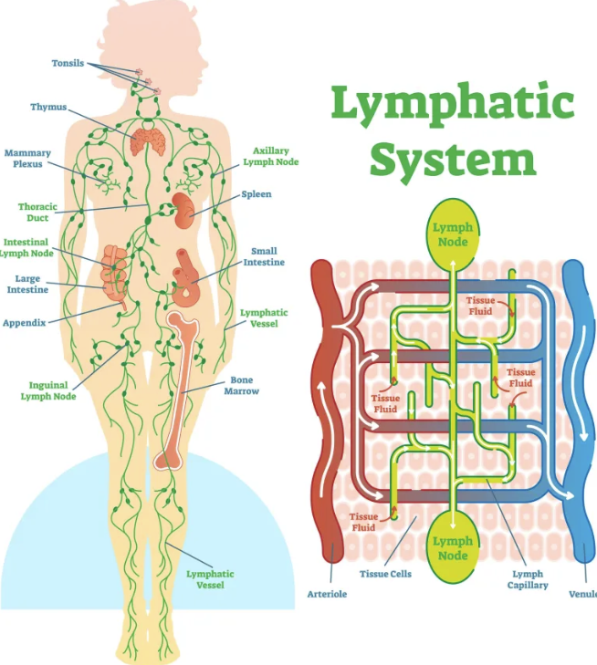
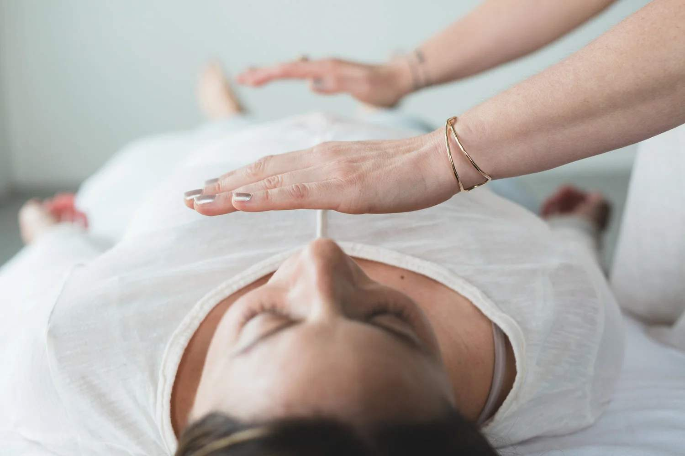
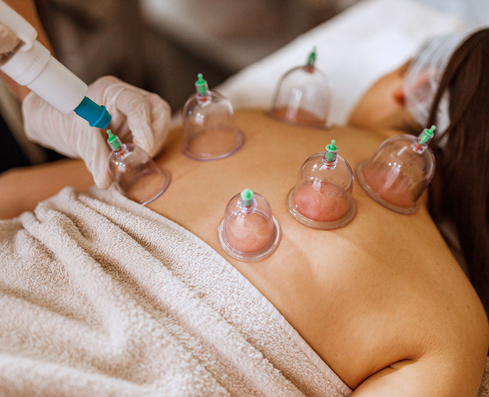
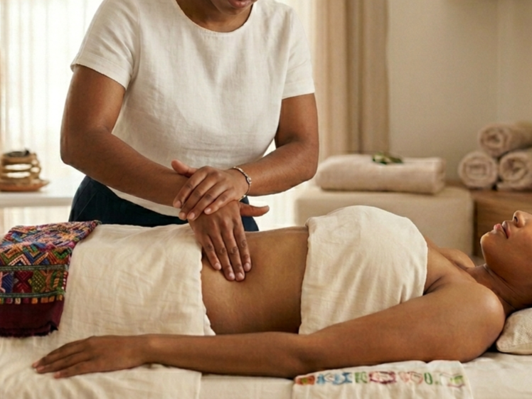

Juliana Martinez
Holistic Bodywork Practitioner
I'm a dedicated health and wellness advocate specializing in bodywork therapies and pharmaceutical-grade essential oils. Using techniques like AromaTouch, Cranial Sacral Therapy, Reiki energy cleansing, and full-body lymphatic drainage, I help you soothe your nervous system, release tension, manage pain, and restore balance so you leave feeling deeply renewed.
Read MoreWith over 9 years of experience in complementary bodywork therapies, I specialize in AromaTouch Technique with pharmaceutical-grade essential oils, Cranial Sacral Therapy, full-body lymphatic drainage, Reiki energetic cleansing with brain balancing, cupping, Mayan Abdominal Technique, and health coaching.
My passion is using these gentle, hands-on and energetic methods to help clients manage pain, reduce stress and anxiety, improve sleep, boost circulation, and activate the body's natural self-healing abilities in a calm, nurturing environment.
Every body is unique and interconnected. I listen carefully to understand your specific needs before creating a personalized bodywork session using techniques like visualization, meditation, Reiki energy balancing, or lymphatic drainage.
Whether addressing tension headaches, soothing sore joints, supporting emotional well-being, or promoting detoxification and self-regulation, I bring expertise, compassion, and presence to help your body return to balance and harmony.

Each service is tailored to your unique needs. All sessions are 60 or 90 minutes.

A gentle, hands-on therapy that uses light touch to help release tension and support the body's natural balance.
Book Now
Soothing, light-touch technique that helps stimulate lymph flow, reduce swelling, and support the body's natural detoxification process.
Book Now
Gentle energy-based service that promotes relaxation, helps clear energetic tension, and supports mental clarity and balance.
Book Now
Therapeutic technique that uses suction to increase circulation, release tension, and support the body's natural healing process.
Book Now
Restorative, light-touch method that supports abdominal organ alignment to improve circulation and promote reproductive and digestive wellness.
Book NowGuides clients through practical meditation practices and communication strategies to build better relationships and personal wellness.
Book Now"I've been seeing Juliana for years and she has been truly life-changing. Her bodywork combines Aromatouch therapy with high-quality essential oils, cranial sacral work, lymphatic drainage, cupping, energy healing, and more. The Mayan abdominal technique has helped me so much with my endometriosis, and she's given me incredible advice to manage it holistically. She’s also helped me work through the physical symptoms of PTSD from childhood trauma in a way that feels safe and supportive. Juliana is deeply intuitive, compassionate, and one of the most knowledgeable practitioners I've ever worked with. Highly recommend her to anyone seeking real healing. "
— female client age 22
"The Cranial Sacral session with Juliana was truly restorative. Her calm, welcoming space and skilled light-touch technique helped release deep tension and restore my balance. I highly recommend her to anyone seeking renewal."
— female client age 32
"I've worked with many bodywork practitioners over the years, but Juliana stands out. She listens carefully, adapts her AromaTouch and Cranial Sacral techniques to my specific needs, and the sense of nervous system calm and balance lasts for days after each session."
— male client age 37
407-773-0371 | theretreataromatherapy@gmail.com
300 N. Ronald Reagan Blvd
Longwood, FL 32750